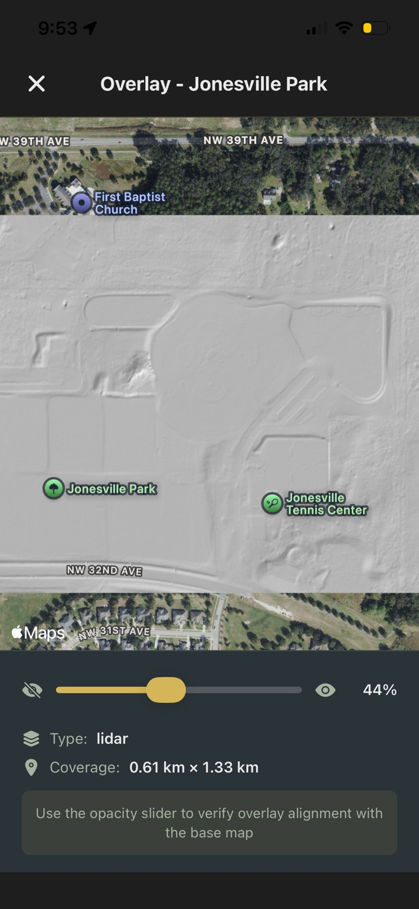

One of the hardest things to accept in metal detecting is that some of the best places you could hunt are already right in front of you... you just can't see them anymore.
An old house that's been gone for 80 years. A path that was once heavily used but has completely disappeared. A gathering spot that only exists now on an old aerial image. You might know it was there, you might even have proof of it, but when you're standing on the ground, everything looks the same.
Just open land. Woods. Grass. Nothing obvious to guide you.
The Gap Between Past and Present
That disconnect between what used to be there and what you're actually looking at is where a lot of good finds get missed. Not because the site is gone, but because there's no easy way to line it up with the present.
Most people try to work around this by juggling tools. You might pull up a historical map or a LiDAR screenshot on your phone, then switch back to your GPS to try and match it. You zoom in, pan around, try to line up a tree line or a bend in a road. Sometimes you get close, but it's never exact, and even being slightly off can mean you're swinging a few feet away from where you actually need to be.
After a while, it starts to feel like guesswork again.
Bringing the Past Into the Field
The real shift happens when that information stops being something you reference and starts being something you can actually stand on.
With Aureal, you can take any image — a screenshot of LiDAR, a historical aerial, a soil map, even a hand-drawn site plan — and bring it directly into your hunt. Right from your phone, you can place that image over the live map and adjust it using simple controls like pan, zoom, and opacity. You're not trying to mentally line things up anymore, you're physically aligning the past with the present until it fits.

Once it's in place, you can fade it in and out as you move, going from a clear view of the current landscape to a fully overlaid version of what used to be there. At full opacity, it sits directly on top of your map, giving you a grounded reference for where you're standing. At any moment, you can toggle it off and back on again, depending on what you need to see.
And once you've aligned it, it stays with that location. The next time you return to that area, the overlay is already there, ready to use again without needing to redo the work.
That alone changes how approachable older or less obvious sites become. Instead of guessing where something might have been, you can walk directly over it, adjusting your position in real time as the overlay guides you.
Building Overlays from Multiple Sources
For Pro users, that process becomes even more streamlined and more powerful.
On the web portal, instead of starting with a single image, you can build overlays from multiple data sources at once. Terrain layers like hillshade, slope, and contours can be combined with historical aerials, soil data, and property boundaries, all in one view. You can adjust how they blend together, fine-tune what stands out, and then save it with a single click.
When you head out to detect, that overlay is already synced to your phone and anchored in place, exactly where you set it. There's no need to recreate it in the field. You're stepping into a site that's already been mapped out with the context you built beforehand.
What used to be a separate research step becomes part of the hunt itself.
Detecting with Intent
In practice, this removes one of the biggest limitations detectorists face when exploring new areas. You're no longer relying on memory, screenshots, or rough alignment. You're working with a direct visual connection between past and present, one that moves with you as you detect.
And over time, that changes how you approach everything. You stop wandering and hoping you're close. You start positioning yourself with intent, focusing on the features that actually mattered when the site was active.
Because in metal detecting, the best finds are rarely sitting in obvious places.
They're tied to things that are no longer visible.
And once you can bring those places back into view, even just as a faint overlay on your screen, you're not searching blindly anymore. You're searching where something actually happened.
See what used to be there
Upload any image as an overlay, or use the Pro Portal to build terrain and historical layers from government data sources. One-tap sync to your phone.
Download Aureal